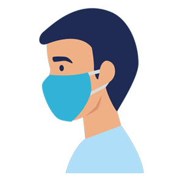

MECUCI TANGAN
Mencuci tangan dengan sabun dan air mengalir secara rutin
MENJAGA JARAK
Menjaga jarak aman 1,5 - 2 meter dengan orang lain
MENGGUNAKAN MASKER
Memakai masker dengan benar saat ke mana pun pergi

TIDAK KELUAR RUMAH
Tidak keluar bila tidak ada keperluan mendesak.

INGATKAN SESAMA
Saling mengingatkan untuk menjalankan protokol kesehatan